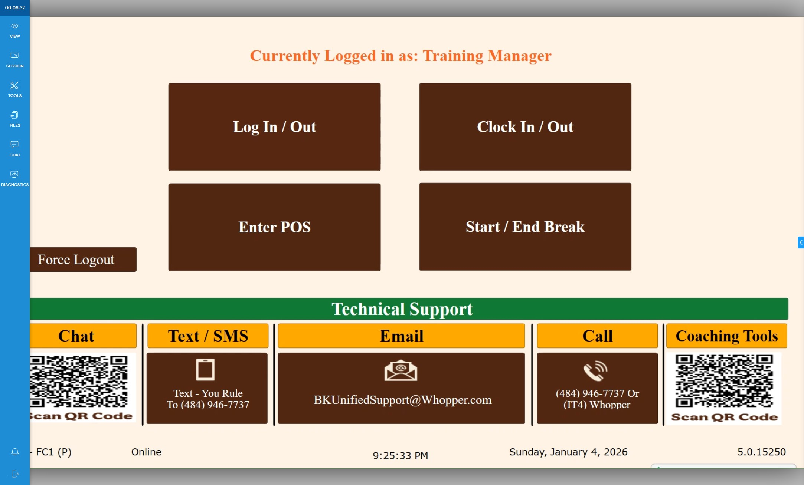
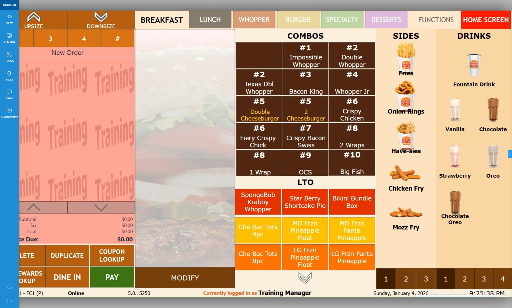
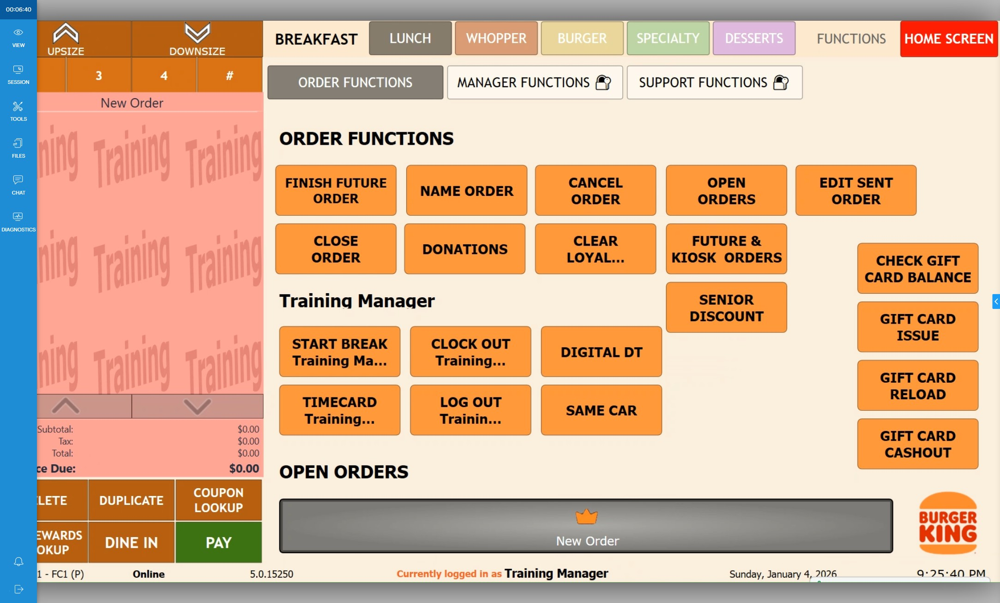
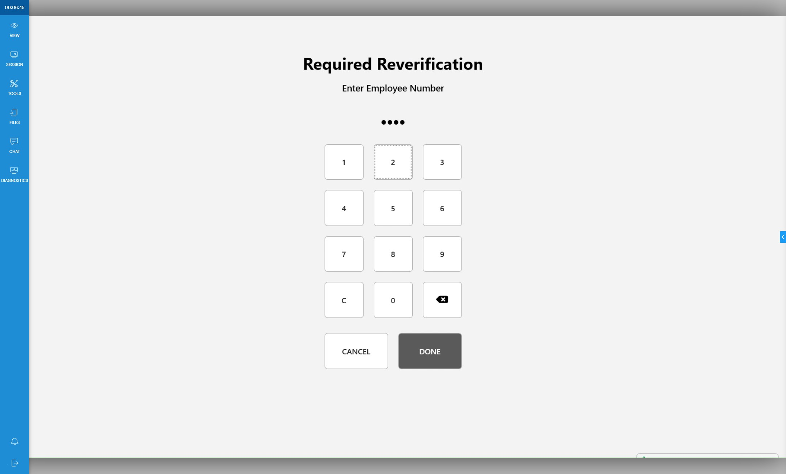
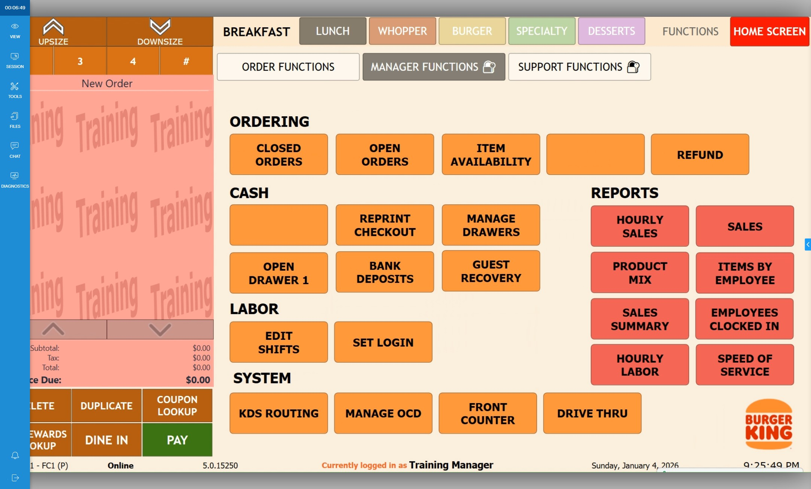
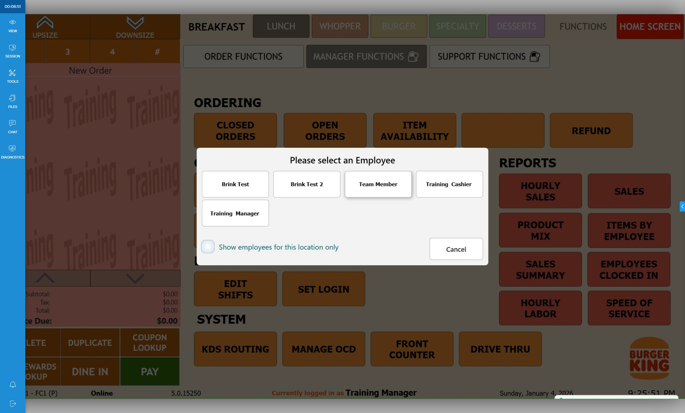
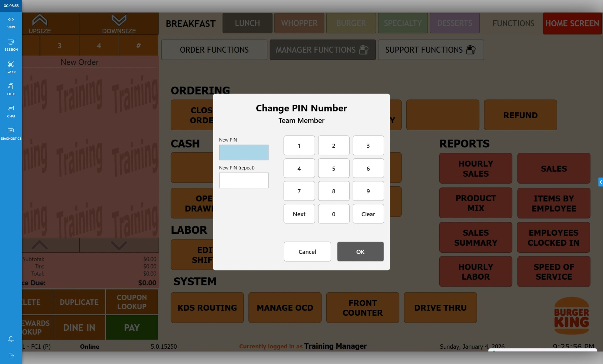
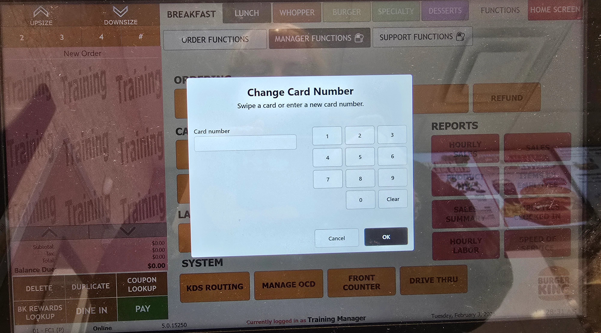

-
1Click "Enter POS"

-
2Click "Functions"

-
3Click "Manager Functions"

-
4Slide card or enter PIN

-
5Click "Set Login"

-
6Select employee you are assigning login number for.

-
7For employees, set login. Click "OK"

-
8For managers, slide card. Click "OK"
